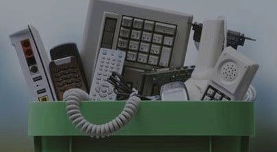
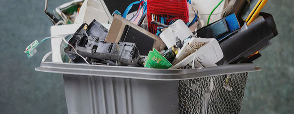
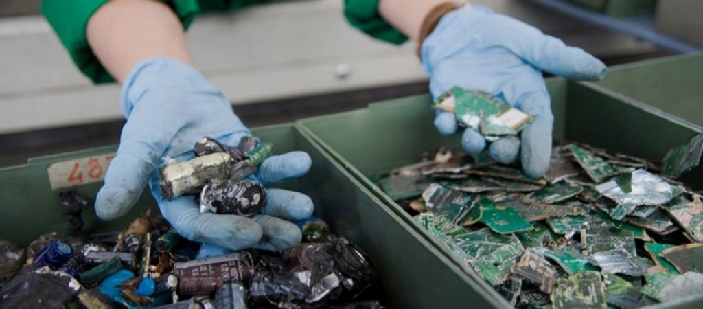

RAEEasy
PartiamoI NOSTRI ARTICOLI

Cosa sono i rifiuti RAEE?
Una guida per capire cosa sono i rifiuti RAEE, perché rappresentano un problema ambientale crescente e quanto sia importante smaltirli correttamente per favorire il riciclo e ridurre l’inquinamento.

Come si classificano i rifiuti
RAEE?
Un approfondimento sulla classificazione dei RAEE, utile per orientarsi tra le diverse categorie e comprendere come ogni tipologia di rifiuto elettronico venga gestito e riciclato.

Dove posso smaltire i rifiuti
RAEE?
Una guida pratica allo smaltimento dei RAEE, con tutte le informazioni necessarie per evitare errori comuni e adottare comportamenti corretti nella gestione dei rifiuti elettronici, sia a livello domestico che professionale.